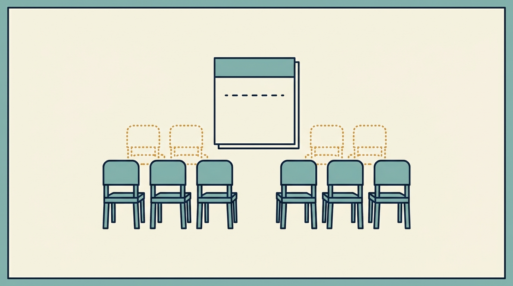

Part V — Leading Through Funding and Ownership Changes
Anatomy of a Layoff

Image generated by Google Gemini (gemini-3-pro-image-preview)
Part V — Leading Through Funding and Ownership Changes

Image generated by Google Gemini (gemini-3-pro-image-preview)